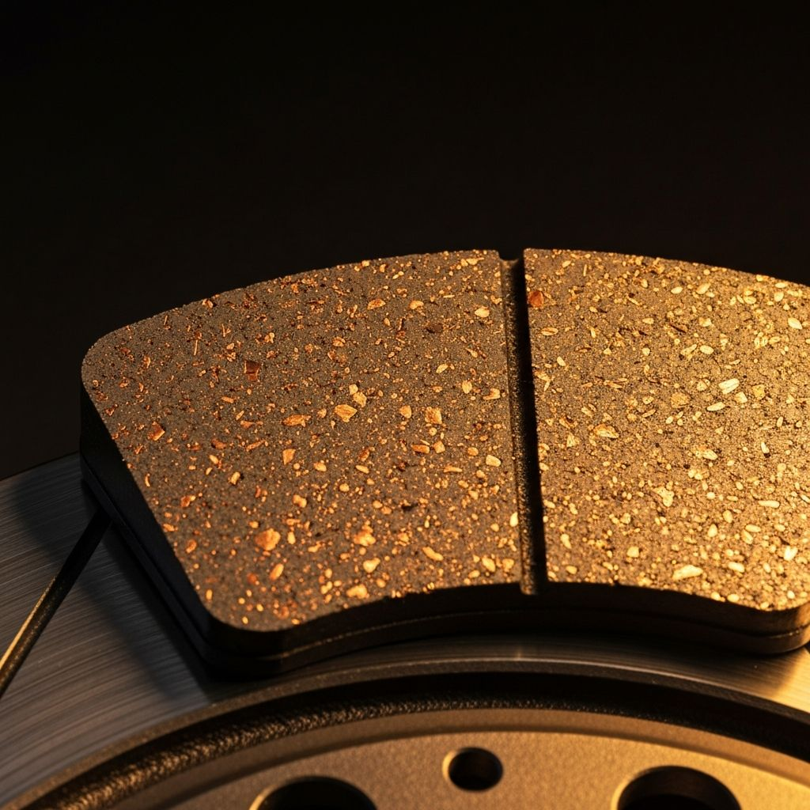
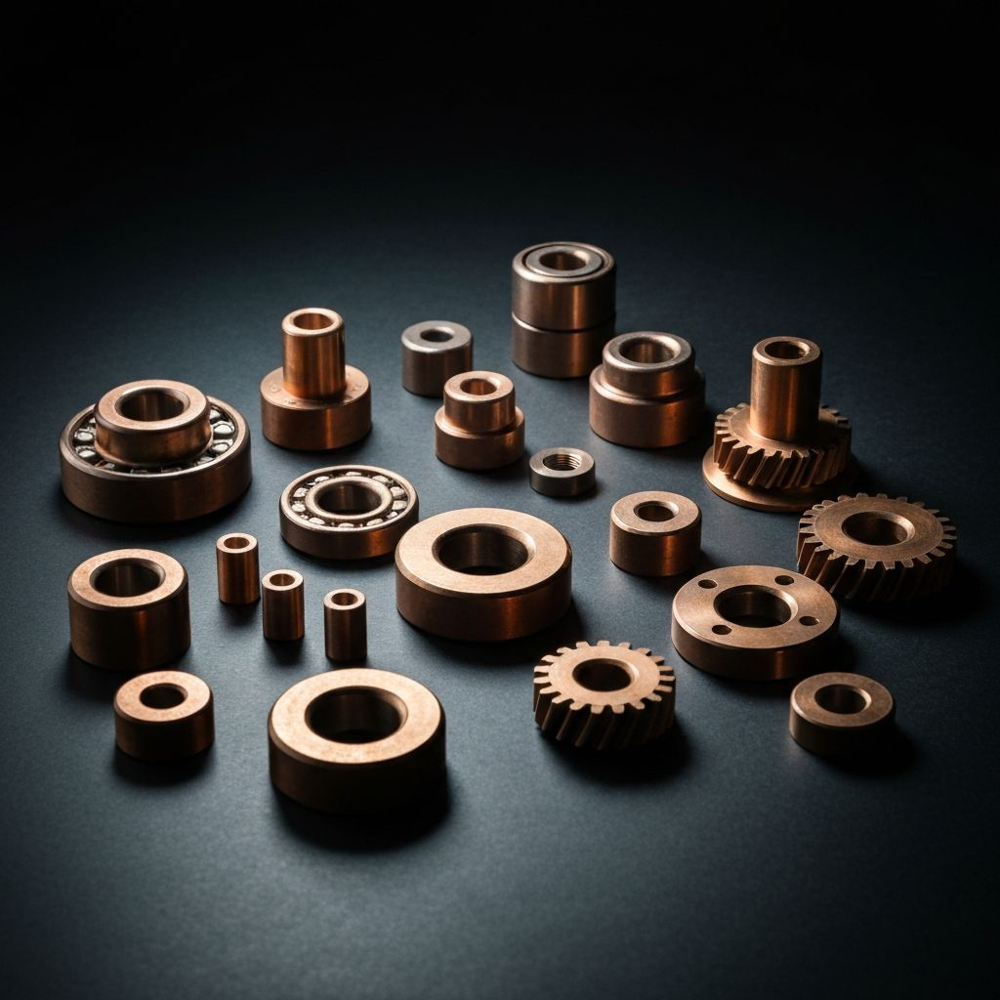
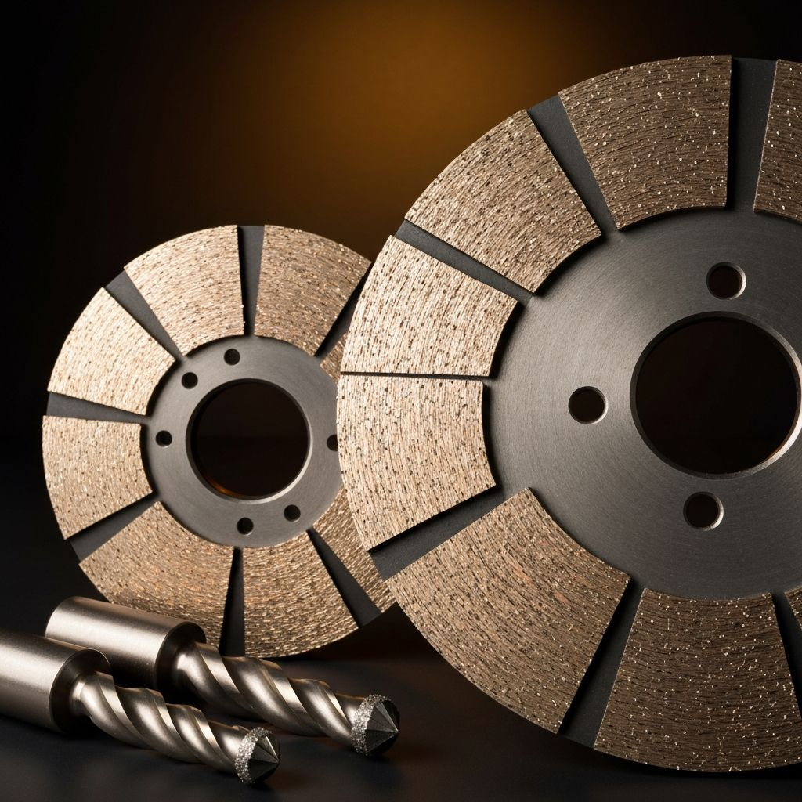
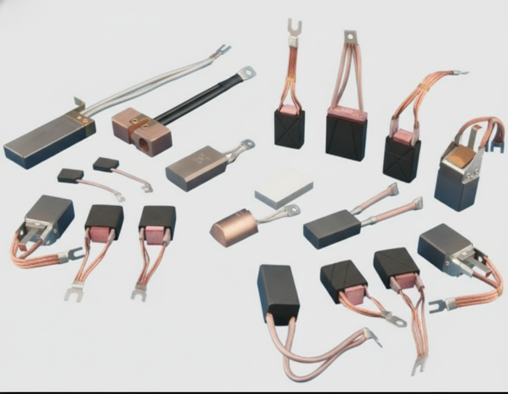
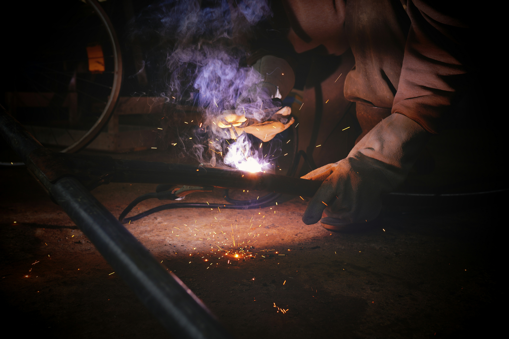

Critical Applications Demand Critical Quality
Arti Metal electrolytic copper powder serves demanding applications across seven major industries. Our dendritic morphology, controlled particle size distribution, and 99.80% purity make the difference between adequate performance and exceptional reliability.
Custom Specifications: Every industry demands its own kind of powder specifications — specific apparent density, particle size distribution, flow characteristics, and purity levels. At Arti Metal, we are ready to cater to your desired powder properties. Our technical team works closely with customers to develop and supply grades precisely tailored to their application requirements — from standard grades to fully customized formulations.

Copper's 401 W/m·K thermal conductivity dissipates heat, prevents thermal fading, and forms a stable tribolayer (μ = 0.35–0.45). Dendritic particles provide structural reinforcement and noise dampening.

Bronze bearings (90Cu/10Sn), iron-copper alloy parts (0.5–10% Cu addition), electrical contacts (Ag-Cu, Cu-W). Dendritic morphology ensures uniform mixing, excellent green strength, and fast sintering.

Copper matrix holds diamond particles, dissipates heat (prevents graphitization), and provides controlled wear for self-sharpening behavior. Lower sintering temperature (700–900°C) vs. iron or cobalt.

Copper powder (10–80% Cu) in carbon brush formulations reduces contact resistance, improves thermal management, and provides structural integrity. Dendritic particles interlock with graphite for superior bonding.

Cu-P brazing pastes (Cu + 5–9% P) are self-fluxing for copper-to-copper joints at 700–800°C. Ag-Cu-P alloys for refrigeration. Flux-cored welding wires for automated operations.

Conductive inks (75–85% Cu) for PCB, RFID, solar cell metallization. Chemical catalysts (hydrogenation, Ullmann coupling, click chemistry) benefit from maximum surface area and 99.80% purity.
| Application | A118 | A123 | A128 | A135 | A200 | A210 |
|---|---|---|---|---|---|---|
| Automotive Brake Pads | ● | ●● | ●● | ● | — | — |
| Railway Brake Pads (PM) | — | — | — | ● | ●● | ●● |
| Carbon Brushes (Electrographitic) | ●● | ●● | ● | — | — | — |
| Carbon Brushes (Copper-Graphite) | — | ● | ●● | ●● | — | — |
| Bronze Bearings (PM) | — | ●● | ●● | ● | — | — |
| Diamond Tools (Fine) | ●● | ●● | ● | — | — | — |
| Diamond Tools (Coarse) | — | — | ● | ●● | ●● | — |
| Conductive Inks / Catalysts | ●● | ●● | ● | — | — | — |
●● = Primary recommendation | ● = Suitable | — = Not recommended | Custom grades available on request for specific application requirements